2.1 Atoms – the building blocks of life
You, this book, the chair you are sitting on and the walls of this room have something in common: they are all made of atoms. So is everything on Earth, and indeed the universe.
The idea of atoms has been around for a few hundred years, and since then chemistry has made enormous progress, influencing all of civilisation and the modern life you live.
- Atoms are incredibly small and are mostly empty space.
- Elements are made of atoms of only one type. Every element is unique: gold is made of gold atoms, carbon of carbon atoms and oxygen of oxygen atoms.
- The name comes from the Greek atomos, meaning indivisible, something that cannot be divided further. In fact atoms can be divided into smaller particles, but an atom is the smallest part of an element that still has the properties of that element.
What are atoms made of?
Atoms consist of a dense nucleus and a cloud of electrons that move around the nucleus. The nucleus is a cluster of two sorts of particle: protons and neutrons.
All the particles in an atom are so light that their mass is measured in atomic mass units rather than grams. Protons and electrons have an electric charge, while neutrons are neutral. The protons and neutrons are tightly packed into the nucleus, and the electrons orbit the nucleus as clouds of charge.
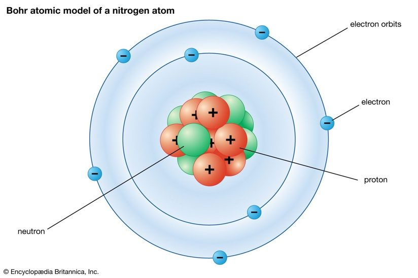
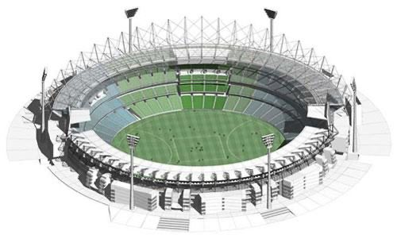
Complete the table of subatomic particles.
| Particle | Relative mass | Charge | Location |
|---|---|---|---|
| Proton | |||
| Neutron | |||
| Electron |
Protons and neutrons have about the same mass (1 atomic mass unit) and are found in the nucleus. Electrons are about 1836 times lighter, carry a 1− charge and orbit the nucleus.
2.2 Atomic Number
The atomic number (Z) of an element is the number of protons in the nucleus of an atom of that element. It is a fundamental property of an element and determines its identity. In a neutral atom, the atomic number also equals the number of electrons orbiting the nucleus.
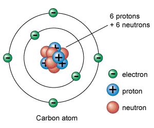
Use the periodic table to complete the table.
| Element | Symbol | Atomic number | Number of protons | Number of electrons (neutral atom) |
|---|---|---|---|---|
| Oxygen | ||||
| Sodium | ||||
| Gold |
2.3 Mass Number
The mass number (A) of an atom is the sum of its protons and neutrons. It gives an approximate measure of the total mass of an atom, because protons and neutrons contribute most of the mass. Electrons have a much smaller mass and are not counted in the mass number.
If you know the mass number and the atomic number of an element, you can find the number of neutrons in the nucleus.
How many neutrons are in a sodium atom with atomic number 11 and mass number 23?
Neutrons = mass number − atomic number = 23 − 11 = 12.
2.4 Introducing chemical symbols
The atomic number (Z) and mass number (A) can be shown using a special notation. Each element has a chemical symbol of one or two letters. For example, the chemical symbol of helium is He. The atomic number is written as a subscript (bottom left) and the mass number as a superscript (top left).
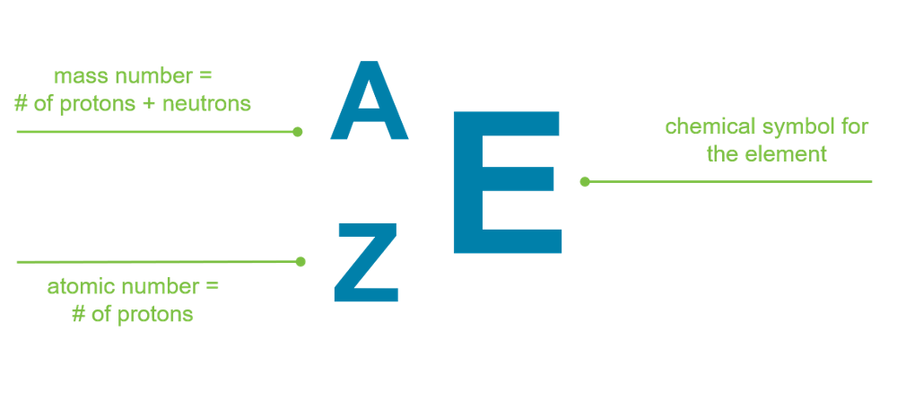
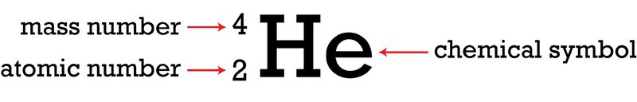
Chemists use two important rules for writing element symbols:
- The first letter of a symbol is always a capital letter, e.g. N (not n) for nitrogen.
- If a symbol has two letters, the second letter is lower case, e.g. Co (not CO) for cobalt.
Write down some examples of element symbols with one letter, element symbols with two letters, and "unusual" symbols that don't match the English name.
One-letter symbols: H (hydrogen), C (carbon), N (nitrogen), O (oxygen), F (fluorine), S (sulfur), I (iodine), K (potassium).
Two-letter symbols: He (helium), Li (lithium), Al (aluminium), Mg (magnesium), Cl (chlorine), Ca (calcium).
Unusual symbols (from Latin names): Na (sodium), K (potassium), Fe (iron), Cu (copper), Ag (silver), Au (gold), Pb (lead), Hg (mercury), Sn (tin).
Complete the table. Some symbols come from the element's Latin name.
| Element | Symbol | Latin name |
|---|---|---|
| Copper | Cu | cuprum |
| Gold | Au | aurum |
| Silver | Ag | argentum |
| Lead | plumbum | |
| Sodium | natrium | |
| Mercury | Hg | hydragyrum |
| Potassium | K | |
| Sn | stannum |
Write the symbols for each element listed and use them to spell a word that matches the clue.
| Clue | Elements | Word |
|---|---|---|
| Board game | carbon, helium, two sulfurs | |
| Relative | fluorine, astatine, hydrogen, erbium | |
| Fuel | carbon, oxygen, aluminium | |
| Sport | sulfur, oxygen, two carbons, erbium | |
| A science | phosphorus, sulfur, hydrogen, yttrium, silicon, caesium | |
| Aliens? | uranium, fluorine, oxygen |
Use the periodic table to complete the table.
| Atom name | Symbol | Protons | Neutrons | Electrons | Mass number |
|---|---|---|---|---|---|
| H | 1 | 0 | |||
| Nitrogen | 7 | 7 | |||
| Be | 4 | ||||
| Oxygen | 8 | ||||
| S | 16 | ||||
| Neon | |||||
| Al | |||||
| 11 |
Protons = atomic number; electrons = protons in a neutral atom; neutrons = (rounded) mass number − atomic number.
2.5 Isotopes
Isotopes are atoms of the same element that have the same number of protons but different numbers of neutrons. Isotopes of an element share the same atomic number (Z) but have different mass numbers (A). Isotopes have similar chemical properties because they have the same number of protons and therefore the same electron configuration.
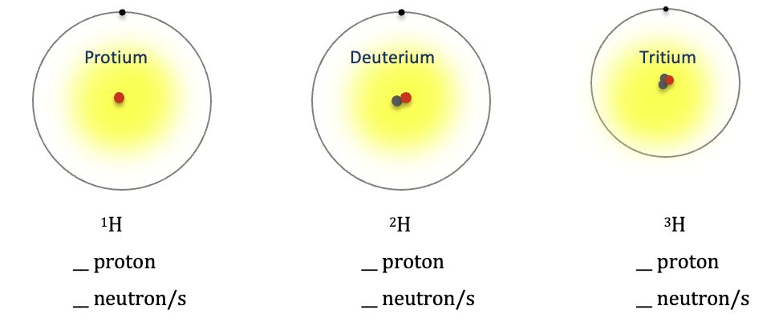
Complete the table showing the isotopes of carbon and magnesium.
| Name | Symbol | Protons | Neutrons | Mass number |
|---|---|---|---|---|
| Carbon-12 | 12C | 6 | 6 | |
| Carbon-13 | 13C | 6 | 13 | |
| Carbon-14 | 14C | 6 | 8 | |
| Magnesium-24 | 24Mg | 12 | 24 | |
| Magnesium-25 | 25Mg | 13 | ||
| Magnesium-26 | 26Mg | 12 | 14 | 26 |
Isotopes are atoms with the same , but different .
An atom has 20 protons and 22 neutrons. Which statement is correct?
Atomic number = protons = 20, which is calcium. Mass number = 20 + 22 = 42. Another isotope of calcium is calcium-40 (20 protons, 20 neutrons).
2.6 Isotopes and radioactivity
Some isotopes are stable and do not change over time, while others are radioactive. In radioactive decay, an unstable nucleus releases particles or energy to become more stable. During radioactive decay, an isotope turns into a different element.
Carbon-14 is radioactive, which means the atom is unstable. Sooner or later it breaks down, or decays, giving out radiation. Many elements have radioactive isotopes.
Radioactive decay is spontaneous and unpredictable. We can't predict exactly when a particular carbon-14 atom will decay: it might take seconds or thousands of years. But we can measure the half-life of a radioactive isotope: the time it takes for half of a sample to decay.
This helps us work out the age of ancient wood, bones and cloth. They all contain some carbon-14, so we can date them by measuring the very faint radiation they give out. This is called carbon dating.
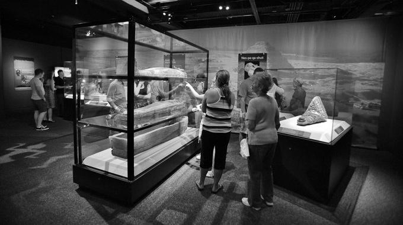
2.7 Chemical formulas
A chemical formula tells us:
- the elements present
- the ratio of the elements in the compound.
Write the number of atoms of each element.
| Compound | Formula | Elements present |
|---|---|---|
| Sodium chloride | NaCl | 1 Na, 1 Cl |
| Calcium fluoride | CaF2 | Ca, F |
| Magnesium sulfate | MgSO4 | Mg, S, O |
| Potassium carbonate | K2CO3 | K, C, O |
| Aluminium oxide | Al2O3 | Al, O |
| Iron (II) phosphate | Fe3(PO4)2 | Fe, P, O |
| Aluminium nitrate | Al(NO3)3 | Al, N, O |
| Ammonium sulfide | (NH4)2S | N, H, S |
A subscript after a bracket multiplies everything inside the bracket. In Fe3(PO4)2 there are 2 × 1 = 2 P atoms and 2 × 4 = 8 O atoms.
2.8 Atoms – the inside story
Bring on the physicists
In 1803, the English chemist John Dalton proposed that all elements are made of tiny particles, which he called atoms, taking inspiration from ancient Greek ideas. He suggested that atoms of different elements could join to make compounds in fixed ratios.
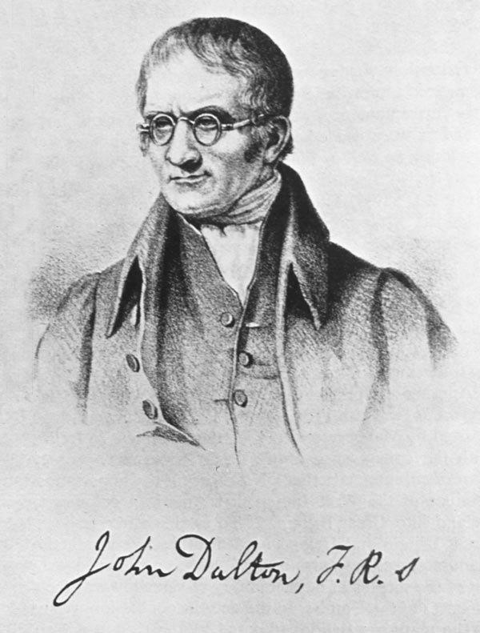
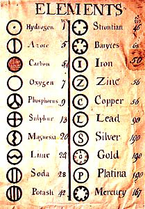
Dalton's "billiard ball" atomic theory said:
- All matter is made of tiny, indivisible particles called atoms.
- Atoms of the same element have identical properties.
- Atoms of different elements have different masses.
- Atoms combine to make compounds.
Modern knowledge has shown that atoms are not truly indivisible. Over the past century, physicists have greatly expanded our understanding of the particles inside atoms.
First, the electrons
In 1897, English physicist J.J. Thomson studied cathode rays, mysterious beams that appeared in an evacuated glass tube connected to an electric circuit. He concluded that the rays were streams of charged particles much smaller than atoms: fragments of atoms called electrons. It was a surprise that atoms were not the smallest particles.
Thomson proposed the plum pudding model: electrons stuck into the atom like raisins in a bun, with the rest of the atom (the bun) carrying a positive charge.
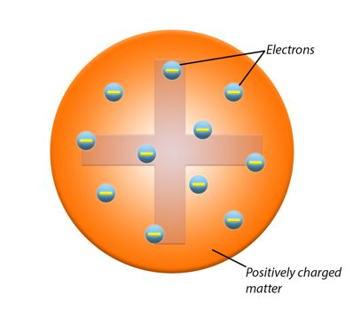
More strange rays
A year earlier, French physicist Henri Becquerel noticed that photographic plates left in a drawer had become foggy. The rays were traced to a sample of uranium in the same drawer, which led to the discovery of radioactivity. Uranium emits alpha particles, 4He2+ clusters of two protons and two neutrons. Alpha particles are positively charged and over 7000 times heavier than electrons, so they could be accelerated and used like tiny projectiles.
Marie Curie, a Polish scientist, heard of Becquerel's findings and set out to find other radioactive substances, discovering the elements polonium and radium. She spent much of her life exploring the uses of radioactivity in medicine and became the first person to win two Nobel Prizes: Physics in 1903 and Chemistry in 1911. Tragically, she died of leukaemia caused by her exposure to radium.
The nucleus and protons
In 1911, in England, physicist Ernest Rutherford fired a stream of alpha particles at a sheet of gold foil. Most passed straight through, but some unexpectedly bounced back. Rutherford concluded that:
- an atom is mostly empty space, so most alpha particles pass straight through
- there is a small, dense, positive centre, the nucleus, which reflects some alpha particles.
He proposed that the nucleus contained positively charged particles, which he called protons. This was the discovery of the atomic nucleus.
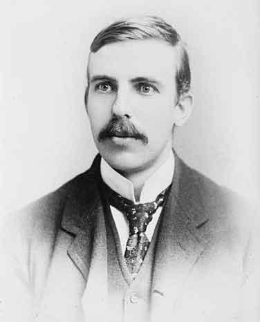
Those electron shells
If the nucleus is positive, why don't the electrons crash straight into it? In 1913, Niels Bohr introduced the idea of electron shells, which matched experimental observations. In his model, electrons are not free to orbit anywhere: they are confined to specific energy levels around the nucleus.
At last, the neutrons
In 1930, German physicists Bothe and Becker fired alpha particles at beryllium, which produced a new stream of particles. By 1932, English physicist James Chadwick showed that these particles had the same mass as protons but no charge. He called them neutrons. Neutrons act as the "glue" that holds the nucleus together. This discovery completed the chemist's model of the atom, 129 years after Dalton first proposed it.
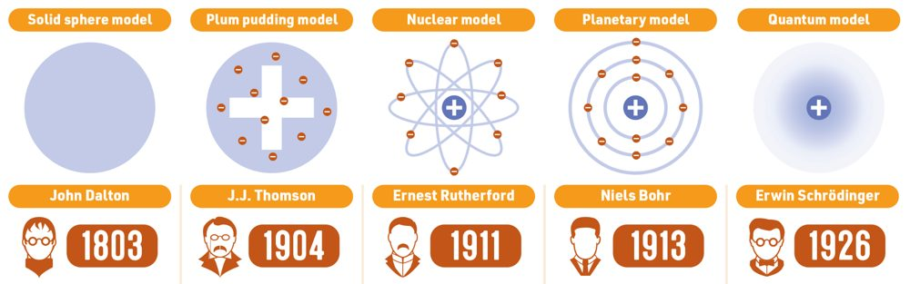
The whole truth
The atomic model you learn serves chemists well in explaining how elements behave, but it is only a model: a simplified representation. Real atoms are much more complicated. Physicists have identified around 50 different elementary particles, including the up and anti-up, the charm and anti-charm, and the strange and anti-strange quarks, and there may be more to discover. Each tiny atom is a busy universe of energetic particles, and you are made of them!
Match each scientist with their contribution to the model of the atom.
2.9 Review questions
Name each of the particles that make up the atom.
Protons, neutrons and electrons.
Which particle has:
- a positive charge?
- no charge?
- almost no mass?
An atom has 9 protons. Which element is it?
What do the following terms mean?
- Atomic number
- Mass number
- Atomic number (Z) is the number of protons in the nucleus of an atom.
- Mass number (A) is the total number of protons and neutrons in the nucleus.
Why do atoms on the periodic table have no overall charge?
A neutral atom has the same number of protons (positive) as electrons (negative), so the charges cancel out.
Name each of these atoms, and state how many protons, electrons and neutrons it has.
| Atom | Name | Protons | Electrons | Neutrons |
|---|---|---|---|---|
| 11H | ||||
| 21H | ||||
| 136C | ||||
| 168O | ||||
| 2713Al | ||||
| 6530Zn |
State the number of atoms of each element in:
- H2SO4: H, S, O
- Ca3(PO4)3: Ca, P, O
Decide whether each statement is true or false.
In a neutral atom the number of protons equals the number of electrons. The nucleus contains only two types of particle (protons and neutrons). Isotopes mean that atoms of one element can have different nuclei. The mass number is protons + neutrons.